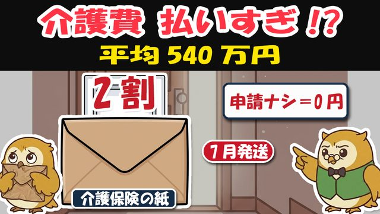
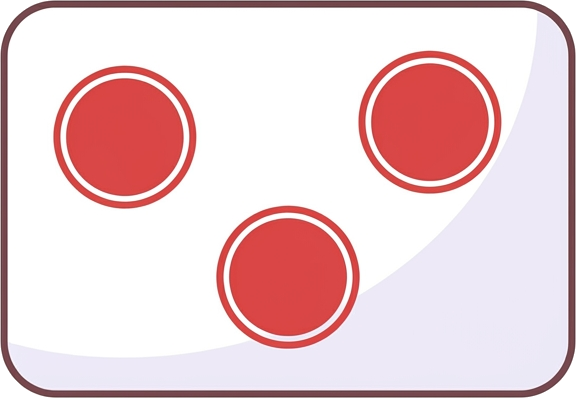

🎁 介護のお金 戻るチェック表（3つの申請の早見表＋窓口でそのまま言う文例）

よく来たな。約束の物を渡す。
この1枚は、「3つの申請」を集めるためのチェック表だ。スタンプラリーと同じ——台紙がなければ、はんこは集まらん。
使い方は簡単。あてはまる□に丸をつけるだけで、うちはどの申請ができるかが分かる。役所の言葉は、覚えなくていい。
印刷して、介護の書類をしまう引き出しへ。そしてその日が来たら、この紙を持って窓口へ行くだけでいい。
自分に1枚、離れて暮らす親御さんにも1枚——頼んだぞ。
📋 まず7月の紙——「負担割合証」チェック
□ 届いたか 介護の認定（要介護・要支援・事業対象者）を受けた人に、毎年7月ごろ届く
□ 割合を見たか 「利用者負担の割合」の欄＝1割・2割・3割（10人に9人は1割）
□ 去年と同じか 毎年8月1日に切り替わる。前の年の収入で判定し直すため、株などを売った翌年は上がることがある（上がらない売り方も多い。違っていたら市区町村に理由を確認）
□ しまったか 介護サービスを使う時、保険証とセットで見せる紙。捨てるのは厳禁
> 📏 2割・3割の目安（ひとり暮らし）：年金などの収入がおよそ280万円以上→2割／340万円以上→3割（夫婦などは基準が別。正確な判定は市区町村へ）
🎯 戻るお金の早見表——あなたはどれができる？

| 申請 | どんな時に戻る？ | いくら？ | できる？診断 |
|---|---|---|---|
| ① 高額介護サービス費（月の上限ごえ） | 介護の自己負担がひと月の上限を超えた | ふつうの世帯＝月44,400円超えた分／住民税非課税世帯＝24,600円超えた分（年金80万円以下などは個人15,000円）／現役並み収入＝93,000円〜140,100円 | □ 介護サービスを月4.5万円以上払った月がある |
| ② 高額医療・高額介護 合算療養費（年の合算） | 病院代＋介護代の1年分（毎年8/1〜翌7/31）が上限を超えた | 70歳以上・ふつうの所得＝年56万円超えた分／住民税非課税世帯＝31万円／さらに所得の低い世帯＝19万円 | □ 病院と介護、両方に払いがある |
| ③ 医療費控除（税金から） | 家族合計の医療費・対象の介護費が年10万円ごえ（所得200万円未満の人は「所得の5%」から） | 超えた分が税金の計算から引かれる（例：15万円なら5万円分。戻りは数千円〜1万円ほど） | □ レシート・領収書をためている |
共通の鉄則
- ①は初回だけ申請——多くの町では2回目からは自動で振り込まれる
- もらえる期限（時効）は2年——気づくのが遅れても、2年前まではさかのぼれる
- ②はお知らせが来ない町もある——1年たったら自分から聞く（下の文例をどうぞ）
- ③の領収書は提出不要——ただし自宅で5年間保管（明細書だけで申告できる）
☎ 窓口でそのまま言う文例（電話でもOK）
①月の上限ごえ（市区町村・介護保険課へ）
> 「高額介護サービス費の申請をしたいのですが、うちは対象になっていますか。過去2年分もあわせて確認をお願いします」
②年の合算（市区町村・保険年金課または加入先の健康保険へ）
> 「高額医療・高額介護合算療養費の申請ができるか確認したいです。医療と介護の両方に自己負担があります」
③税金（確定申告・税務署または申告会場へ）
> 「介護のおむつ代と施設の費用を医療費控除に入れたいです。必要な証明書を教えてください」
※おむつ代は医師の「おむつ使用証明書」が必要（2025年分からは要介護認定の主治医意見書の写しなどでも代用できる場合がある。窓口で確認を）
🗓 1年のリズム（貼っておく用）
| 時期 | やること |
|---|---|
| 7月 | 負担割合証が届く→割合を確認（この紙は捨てない） |
| 8月1日 | 新しい割合に切り替わり／合算の1年の数え始め |
| 毎月 | 介護の領収書・レシートを封筒にためる |
| 月4.5万円超えた月 | ①のお知らせを待つ→届いたら必ず返送（来なければ電話） |
| 翌年8月ごろ | ②「合算できますか」と1本電話 |
| 2〜3月 | ③確定申告でレシートを税金に変える |
🎁 動画で話していない「4つ目の紙」（おまけ）
施設やショートステイの食費・部屋代は、①②の上限の外——ここが実は重い。だが「負担限度額認定」という紙を市区町村に申請して認められると、食費・部屋代そのものが安くなる（住民税非課税世帯などが対象。預貯金の要件あり）。
- 対象になりそうなら、市区町村の介護保険課で「負担限度額認定の申請をしたい」と言う
- 認められると「負担限度額認定証」が届く→施設に見せるだけ
- 2026年8月から食費・部屋代の基準額が見直される——最新の金額は市区町村で確認を
🔢 覚えておく数字
| 数字 | 意味 |
|---|---|
| 8月1日 | 負担割合の切り替え日＝紙の健康診断日 |
| 44,400円 | ふつうの世帯の「ひと月の上限」（超えた分は申請で戻る） |
| 56万円 | 70歳以上・ふつうの所得の「年の合算の上限」 |
| 2年 | 申請の期限（さかのぼれるのも2年） |
フク先生より——「介護のお金は、申請した人にだけ戻ってくる」。
国は敵ではないが、知らせ下手だ。こちらから取りにいけば、ちゃんと返してくれる。
この表を、家族の見える所へ。お盆に親と会うなら、7月の紙を一緒に見るといい。
※本資料は2026年7月時点の制度に基づく一般的情報です。金額・要件は世帯の状況で異なります。申請の可否は必ずお住まいの市区町村（介護保険の窓口）でご確認ください。

取りにいった者から、返ってくる。次の贈り物も、このLINEで届ける。— フク先生（老後資金の止まり木）